1994:
The 1994 J. J. Cale World Tour
-Piano and Vocal
Details and List of Concerts Will Be Added Soon
1996:
as pianist with

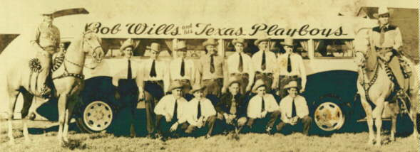
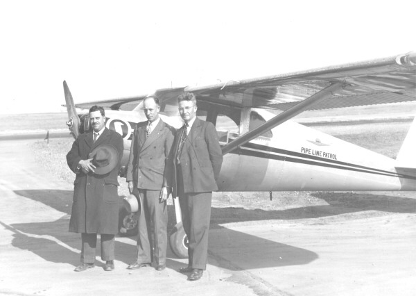
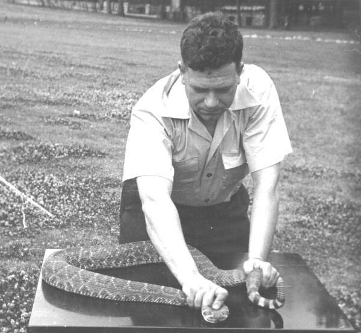
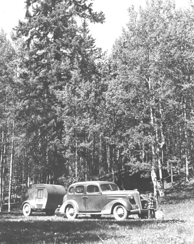
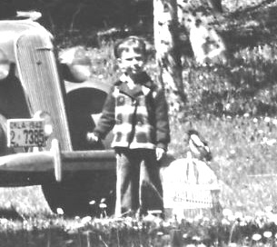
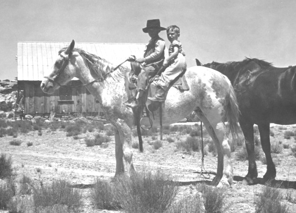
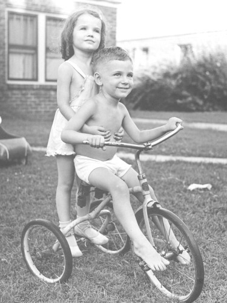
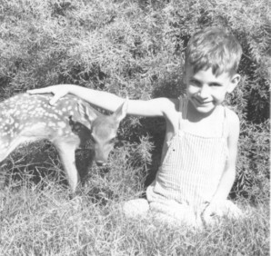
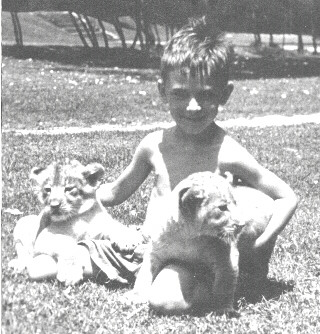
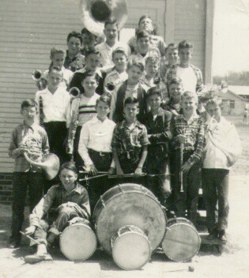
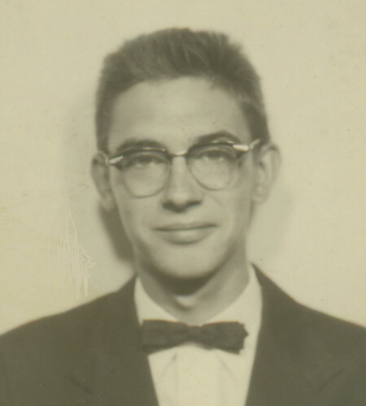
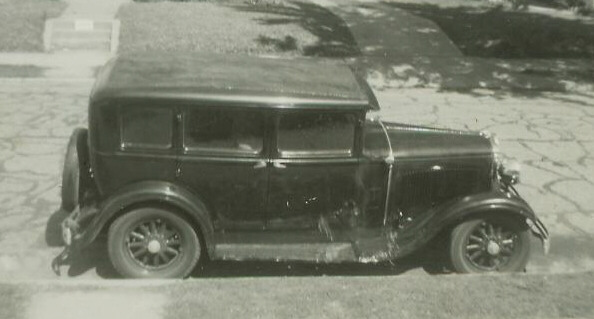
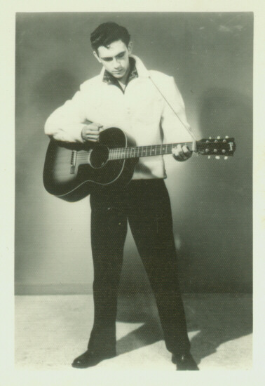
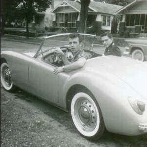
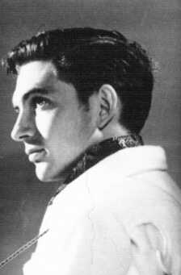
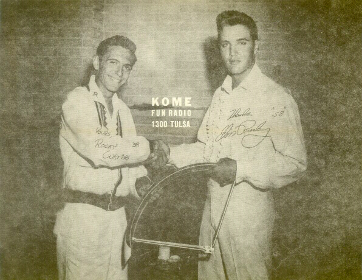
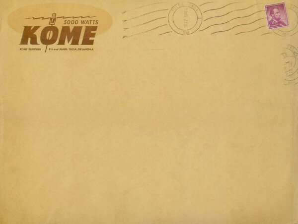
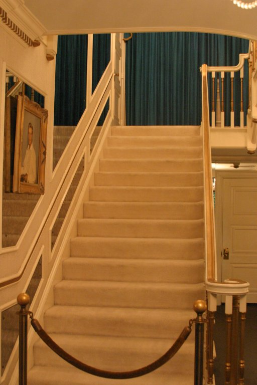
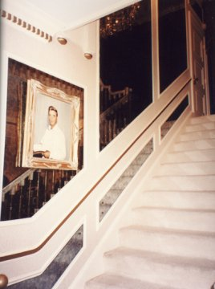
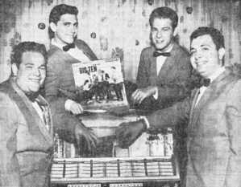
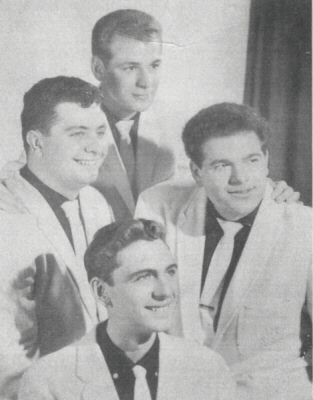
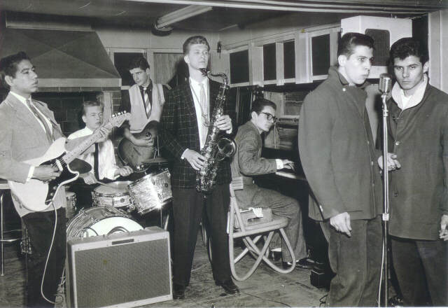
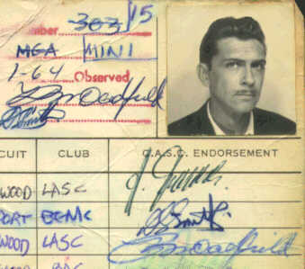
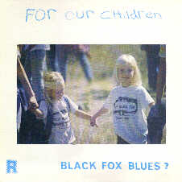
May 31st,June 1st,July 26th,July 27th,August 25th,September 14th,September 15th,September 17th,September 19th,September 20th,September 21st,September 22nd,September 24th,September 25th,September 26th,September 28th,September 29th,|
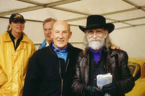 |
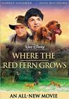

| 2004 TOUR Show Dates | ||
|---|---|---|
| May 22 | McCabe's | Santa Monica, California |
| May 24 | The Palms | Winters, CA |
| May 25 | The Catalyst | Santa Cruz, CA |
| May 26 | Mystic Theatre | Petaluma, CA |
| May 28 | Coach House | San Juan Capistrano, California |
| May 30 | Belly Up Tavern | Solana Beach, California |
| June 1 | ASU Kerr Cultural Center | Scottsdale, Arizona |
| June 2 | The Paramount | Santa Fe, New Mexico |
| June 4 | Texas Union Ballroom | Austin, Texas |
| June 5 | Crossroads Guitar Fesitval | Dallas, Texas |
| June 7 | Mucky Duck | Houston, Texas |
| June 8 | The House of Blues | New Orleans, LA |
| June 10 | Georgia Theatre | Athens, GA |
| June 11 | Variety Playhouse | Atlanta, GA |
| June 12 | Belcourt Theater | Nashville, TN |
| June 13 | The Orange Peel | Asheville, NC |
| June 15 | The McGlohan Theatre | Charlotte, NC |
| June 16 | Lincoln Theater Park | Raleigh, NC |
| June 17 | The Birchmere | Alexandria, VA |
| June 19 | Lebanon Opera House | Lebanon, NH |
| June 20 | Paradise Rock Club | Boston, MA |
| June 22 | Ram's Head | Annapolis, MD |
| June 24 | Irving PLaza | New York, NY |
| July 26 | Le Spectrum de Montreal | Montreal, QC Canada |
| June 27 | Lee's Palace | Toronto, Canada |
| June 28 | The Ark | Ann Arbor, MI |
| June 30 | House of Blues | Chicago, IL |
| July 1 | Luther's Blues | Madison, WI |
| July 2 | Cedar Cultural Center | Minneapolis, MN |
| July 5 | Cain's Ballroom | Tulsa, OK |
| July 7 | Gothic Theatre | Englewood, CO |
| July 8 | Boulder Theatre | Boulder, CO |
| July 9 | Levelz | Steamboat Springs, CO |
| July 10 | Copper Mountain Summmer Series | Copper Mountain, CO |
| July 12 | Orpheum Theater | Flagstaff, AZ |
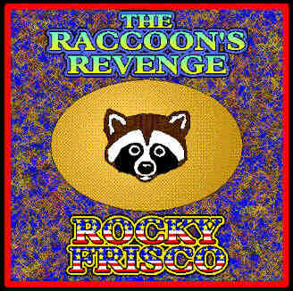
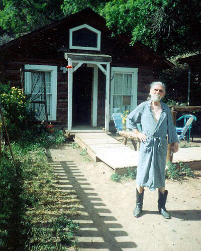
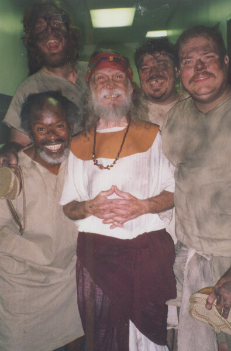
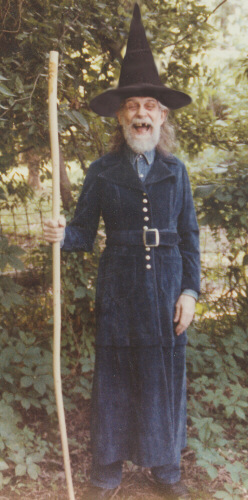